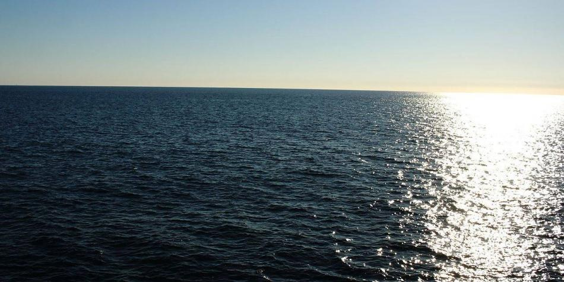
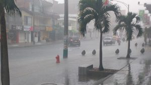
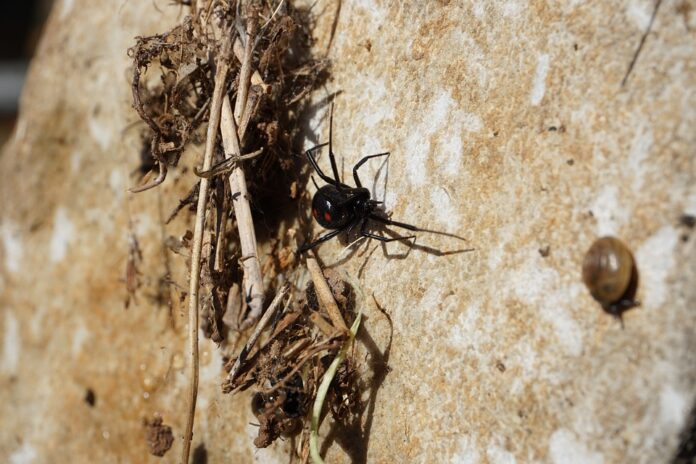
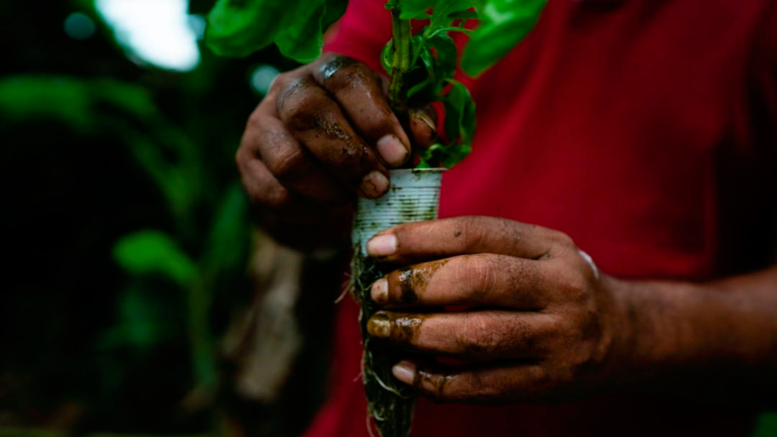
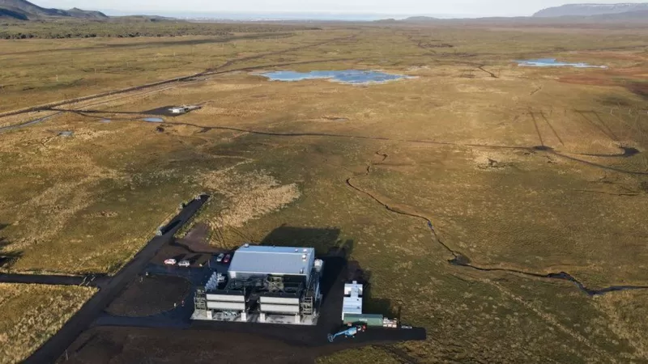

Noticias
Cambio climático está produciendo amnesia en los océanos
La mayor parte de los océanos están perdiendo constantemente su memoria año tras año debido al calentamiento global, revelan proyecciones de última generación de Modelos del Sistema Terrestre.
Efectos del cambio climático serían cada vez más fuertes
El cambio climático que viene enfrentando el mundo en los últimos años y, sobre todo, países como Colombia, han hecho que los desastres naturales sean cada vez más frecuentes. Según expertos, situaciones como estas serán recurrentes.
El cambio climático amenaza a los animales venenosos
Diferentes animales han adquirido la capacidad de producir e inyectar veneno. En algunas ocasiones, las especies venenosas, como serpientes, arañas o medusas, entran en contacto con los humanos o con animales domésticos, produciendo accidentes que pueden llevar a sufrir serias lesiones o hasta ocasionar la muerte.
Con energías sostenibles comunidad mejora su productividad y mitiga el cambio climático
Este proyecto también es desarrollado en otros municipios de la cuenca baja del río Sinú, como Purísima, Chimá, Tuchín, San Andrés de Sotavento, Cotorra, Momil, San Antero y San Bernardo del Viento.
5 formas de salvar al planeta del cambio climatico
Los peligros del cambio climático han sido reportados durante años. Pero lo que ha recibido menos atención es cómo el mundo podría abordar el problema de manera efectiva.
